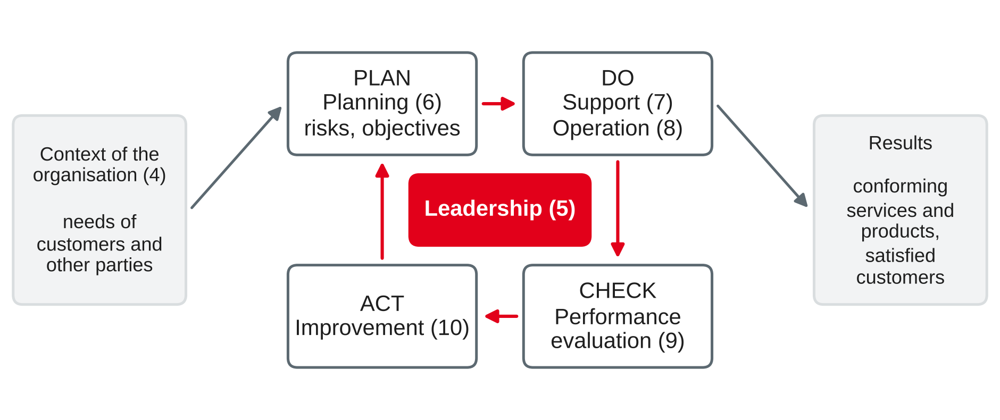

IT Management and EAM
Quality concepts · ISO 9000 and ISO 9001 in IT · software quality with ISO/IEC 25010 · maturity models and CMMI
DHBW · Digital Business Management (Business IT) · Semester 4
You were asked to think of a piece of software at work that annoys you.
Approaches, dimensions and service quality
| Approach | Quality means … | IT example |
|---|---|---|
| Transcendent | Innate excellence that you recognise when you see it, but cannot define exactly | "This app just feels right" |
| Product-based | More of a measurable attribute | More features, faster response time, more storage |
| User-based | Fitness for the needs of the user — in the eye of the beholder | Drivers can sell a ticket in under 10 seconds |
| Manufacturing-based | Conformance to requirements and specifications | Release passes all tests; no deviation from the specification |
| Value-based | Performance or conformance at an acceptable price | A 99.5 % service for the price of a 99.5 % service |
Own wording based on Garvin (1984).
| Dimension | Ticket device example |
|---|---|
| Performance | Time to sell a ticket |
| Features | Contactless card, app ticket check |
| Reliability | Failures per 1,000 operating hours |
| Conformance | Fares match the approved tariff |
| Durability | Years of use before replacement |
| Serviceability | Time and effort to swap or repair a device |
| Aesthetics | Look and feel of the screen |
| Perceived quality | Reputation of the manufacturer |
Own examples based on Garvin (1984).
Five dimensions of service quality (SERVQUAL)
Quality as a gap
Own wording based on Parasuraman et al. (1988).
Quality management covers all coordinated activities to direct and control an organisation with regard to quality: setting a quality policy and quality objectives, and achieving them through quality planning, assurance, control and improvement.
| Activity | Focus | IT example |
|---|---|---|
| Quality planning | Set objectives and the processes and resources to reach them | Define acceptance criteria for a release |
| Quality assurance | Build confidence that requirements will be met (prevention) | Code reviews, test strategy, process audits |
| Quality control | Check that requirements are met (detection) | Running test cases, checking fares before go-live |
| Quality improvement | Increase the ability to meet requirements | Root cause analysis, process changes |
Own wording based on ISO (2026a) and Tiemeyer (2023).
The car-sharing app of Rhein-Neckar Mobil Group has a new release. Which of Garvin's approaches does each person take — and which SERVQUAL dimension do the last two statements address?
ISO 9000 and ISO 9001 in IT
Customer focus
Meet and try to exceed customer needs.
Leadership
Leaders set direction and conditions for quality.
Engagement of people
Competent, empowered people at all levels.
Process approach
Manage activities as interrelated processes in a system.
Improvement
Ongoing improvement as a permanent objective.
Evidence-based decision making
Decide on the basis of data and analysis.
Relationship management
Manage relationships with suppliers and partners.
Own wording based on ISO (2026a).

ISO 9001 sets requirements for a quality management system (QMS); it is certifiable. It uses the same clause structure 4–10 as ISO/IEC 27001 and ISO 22301 (session 8) and asks for risk-based thinking.
Own illustration based on ISO (2015, 2026b).
| Clause | What it means for an IT department or IT service provider |
|---|---|
| 4 Context | Scope, e.g. "development and operation of IT services for the group"; interested parties |
| 5 Leadership | Quality policy, roles, customer focus of IT management |
| 6 Planning | Risks and opportunities, measurable quality objectives (e.g. first-time-right changes) |
| 7 Support | Competence, monitoring tools, knowledge management, documented information |
| 8 Operation | Requirements, design and development of software, control of external suppliers, release and service delivery, nonconforming outputs |
| 9 Performance evaluation | Customer satisfaction, internal audits, management review |
| 10 Improvement | Nonconformity and corrective action, continual improvement |
Own summary based on ISO (2015, 2026b).
ISO (2024, 2026b, 2026c).
Benefits
Criticism
Own assessment based on ISO (2026b).
ISO/IEC 25010
| Characteristic | Sub-characteristics (selection) |
|---|---|
| Functional suitability | Completeness, correctness, appropriateness |
| Performance efficiency | Time behaviour, resource utilisation, capacity |
| Compatibility | Co-existence, interoperability |
| Interaction capability | Learnability, operability, user error protection, inclusivity, user assistance |
| Reliability | Faultlessness, availability, fault tolerance, recoverability |
| Security | Confidentiality, integrity, non-repudiation, accountability, authenticity, resistance |
| Maintainability | Modularity, reusability, analysability, modifiability, testability |
| Flexibility | Adaptability, scalability, installability, replaceability |
| Safety | Operational constraint, risk identification, fail safe, hazard warning, safe integration |
Own summary based on ISO/IEC (2023a).
Product quality (ISO/IEC 25010)
Quality in use (ISO/IEC 25019)
Own summary based on ISO/IEC (2023a, 2023b).
| Vague wish | Characteristic | Measurable requirement |
|---|---|---|
| "The device must be fast" | Performance efficiency (time behaviour) | 95 % of card payments complete within 3 seconds |
| "Easy to use for new drivers" | Interaction capability (learnability) | A new driver sells all standard fares after a 30-minute briefing |
| "It must not break down" | Reliability (fault tolerance) | Without mobile network, cash sales continue and data are stored for 48 hours |
| "Fare changes must be easy" | Maintainability (modifiability) | A new fare can be configured and tested within 2 days without a software release |
Quality requirements become testable acceptance criteria — and some of them become service level targets in the SLA (session 6).
Own examples based on ISO/IEC (2023a).
Assign each complaint about the Rhein-Neckar Mobil car-sharing app to an ISO/IEC 25010 characteristic (and sub-characteristic, if you can).
How capable are our processes?
Own summary based on CMMI Institute (n.d.) and Lear (2023).
Own wording based on CMMI Institute (n.d.).
The model
Appraisals
Own summary based on Lear (2023) and CMMI Institute (n.d.).
| Instrument | Question it answers | Link |
|---|---|---|
| Garvin, SERVQUAL | What does quality mean — for whom? | Users, customers, controllers |
| ISO 9001 | Do we have a working system that delivers quality and improves? | Certifiable QMS; same structure as ISO/IEC 27001 |
| ISO/IEC 25010 | Which properties must our software or system have? | Requirements, tests, acceptance |
| CMMI | How capable are our development and service processes? | Supplier selection, improvement roadmap |
| SLA (session 6) | Which service levels have we agreed? | Measured and reported monthly |
| ITIL continual improvement (session 5) | How do we improve step by step? | Improvement cycle like PDCA |
Own overview.
Case: Rhein-Neckar Mobil Group (sessions 3–8), on-board ticketing service. The monthly SLA report is green: back-end availability 99.8 % (target 99.5 %), 98.6 % of devices working at shift start (target 98 %). Yet:
End of Part A — IT management. From session 10 we move to Part B — enterprise architecture management: from managing IT functions to designing how business and IT fit together as a whole.
Preparation: list the five most important applications of your training company. Which business processes does each one support — and who would know the complete list?
CMMI® is a registered trademark of ISACA. Diagrams in this deck are own illustrations. Standards are described in own words.